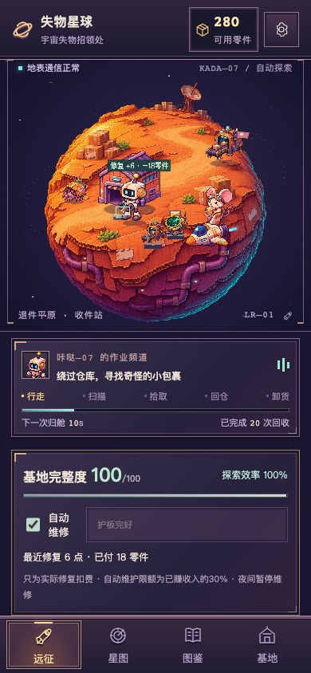
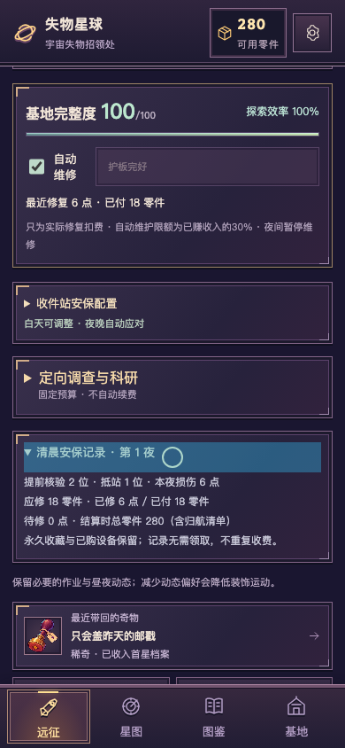
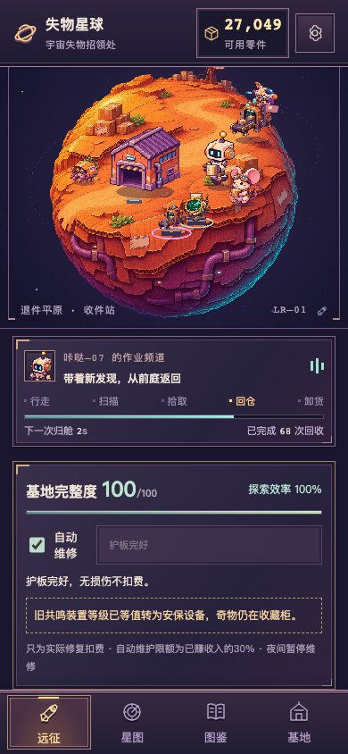
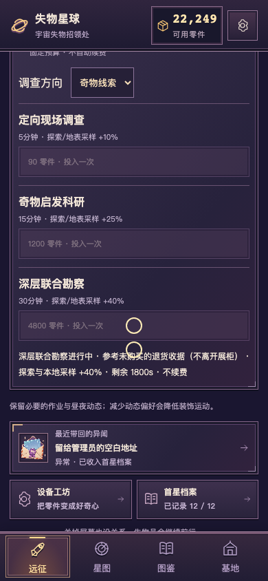
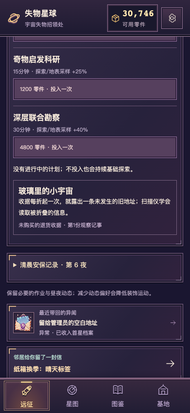
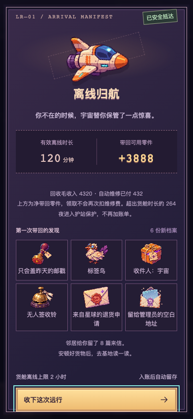

收件站自主安保 × 真实损伤与维修
0.3.0 · 88e2e6b · 单页设计/方案比较 · 完整交付与限制 · Draft PR #2
以下为实际生产构建390×844桌面移动触控仿真，视频按真实墙钟；不是TapTap真机录像。样本初始化/测试时钟图片均单独标注。不合并、不正式发行，不制作第二星球。
同一原远征：夜防→撞击→清晨修复
24秒关键段 · 14秒同源裁切近景。引擎快照只把开始位置设在第228秒，之后真实12秒黄昏＋60秒夜晚＋清晨。真实邮戳发现提示以原生触控关闭，维修读数不靠删DOM伪造。
奇物留在玻璃柜 → 启发科研与设备工程
警戒灯引导＋隔离门阻挡 → 咔哒核对封条 ← 飞船轨道照明
真正抵站才损伤护板 → 清晨真实付费维修 → 继续探索
维修控制与低余额实录
明确测试快照：82完整度/7零件，触控修2点花6，剩1；不借债、不丢收藏。
原远征的完整度、自动开关、手动维修
实际损伤6/修6/付18/待修0；只记一笔，不重复收费。 27,049旧档权益与一次科研预算
明确旧档测试快照：27049、原守护2/3，等值迁移为安保设备，真实支付4800，探索/地表采样+40%，不续费。
旧权益保留，奇物不离开展柜。
固定预算、时长与真实能力。
加速测试时钟验证30分钟完成：具体参考藏品的观察记事；不是30分钟实录。 真实引擎收入支出
可读平衡表 · 72组完整CSV · 全部原始JSON。120/5000/27049/50000 × 三档真实安保配置 × 自动开关 × 积累/建设/科研。0/15/30/60/120分钟，8/24小时独立离线封顶。
| 首小时样本 | 毛收入 | 维修 | 自愿工程/科研 | 剩余 |
|---|
| 新手120·积累 | 2160 | 216 | 0 | 2064 |
| 新手120·建设 | 8731 | 186 | 8416工程 | 249 |
| 新手120·科研 | 2354 | 216 | 1080科研 | 1178 |
| 旧档27049·科研 | 16942 | 216 | 9600科研 | 34175 |
仅修真实损伤。自动维修限额为已赚收入30%，未用限额最多300；不是新货币或预扣税。强安保可无损而0维修费。大额余额不强制清零。施工/科研是模拟玩家每15秒一次的主动决策，游戏不会自动续购。

加速时钟24h：2h有效收入4320，维修432，净归航3888，超时264夜不加账单。测试、资源与待确认
20/20设计原件、82单元、104浏览器流程；验证与包信息 · 实际时间轴/费用/性能 · 保留的早期录制采样 · 验收清单。六秒桌面性能不等于手机稳定性或长时发热认证。
TapTap开发自测428060 / 0.3.0 / 88e2e6b，二维码仅在会话。旧满级安保可能全拦截，可白天停用一个设备对照；停用不损失已购等级。真实手机、新循环节奏及长期科研吸引力待用户审核。